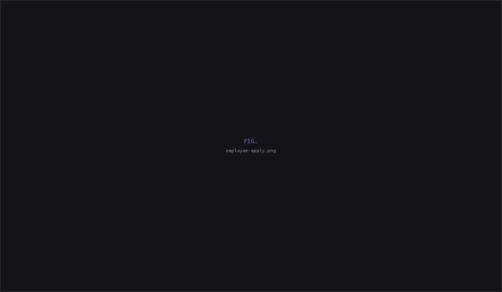
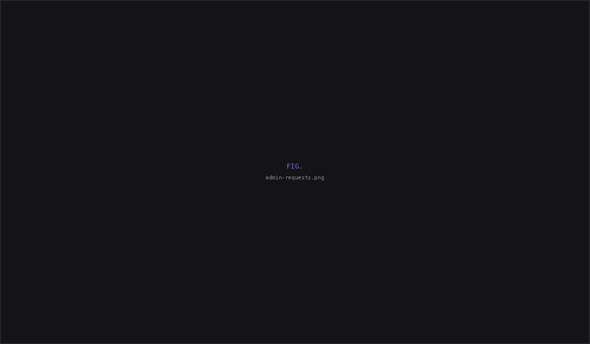

Prowiz Analytics: Using AI to uncover UX gaps in enterprise leave management.
Audited an existing leave management module with AI, uncovered six UX gaps beyond the original brief, and designed a complete employee and admin workflow that made complex leave policies transparent.
| Client | Prowiz Analytics — B2B timesheet and project billing SaaS |
| Role | Freelance Product Designer — full module ownership |
| Timeline | May 2026 |
| Brief | "Design a leave request form and admin approval screen" |
| What I delivered | End-to-end leave management workflow across employee and admin portals, six UX improvements beyond the original brief, and a live deduction calculator that made complex leave policies transparent before submission. |
The problem
Prowiz uses a Seasonal Multiplier System — leave deductions are 0.75× in non-peak months (Apr–Aug) and 1.25× in peak months (Sep–Mar). An employee taking 4 days off might lose 3 or 5 from their balance depending on the month. Without visible math, every deduction feels arbitrary.
The real gap
Transparency was missing. The client asked for a form. But a form without visible calculation just moves the confusion from HR conversations to a digital form. The UI needed to show its work — every multiplier, every resulting balance — before the employee hits submit.
An AI-native workflow: audit → identify → design → deliver
This project was deliberately AI-native from the start — not as an experiment, but because it was the most effective way to work within the project's constraints: fast turnaround, freelance scope, complex business logic that needed systematic analysis.
Claude audits
Fed policy + brief to Claude. Asked it to identify UX gaps, edge cases, compliance risks the brief didn't mention.
I prioritise
Claude surfaced 6 gaps. I validated each against business logic and decided which to solve and how.
Figma Make designs
Extracted design system from existing screens. Prompt-engineered Figma Make for accurate hi-fi output, then verified.
AI accelerated analysis and generation, allowing me to spend more time validating gaps, refining business logic, and designing the employee and admin experience.
Show the math. Always. Every screen.
Every screen in this module answers the same question: how was this calculated? The multiplier formula isn't buried in an HR policy document — it's visible at the exact moment of decision.
The admin sees the same calculation. When reviewing a request in the detail drawer, they see: season, multiplier, balance deducted, current balance, balance after approval. Both sides of the system speak the same mathematical language — no information asymmetry between employee and admin.
4 UX gaps the client didn't ask for — but needed
The brief said: "a leave request form and admin approval screen." Here's what I identified and resolved beyond that, and why each one mattered:
Live deduction calculator
Formula runs in real time as dates are picked. Cross-season spans split automatically at the Apr/Sep boundary. Without this, employees submit blind and are surprised by the deduction.
CL 3-day cap enforcement
Casual Leave can't exceed 3 consecutive days per policy. Warning fires and blocks submission at UI level — policy enforced through design, not an HR follow-up call after submission.
Conditional validation
The interface introduced conditional states for medical certificates and mandatory rejection reasons, preventing incomplete workflows from reaching approval.
Draft state
Save Draft with inline confirmation. Drafts surface in My Requests with resume and delete actions. Work-in-progress isn't lost when someone needs to check their schedule mid-form.
Two portals, one source of truth
The module is a complete two-sided system. The employee applies and tracks; the admin reviews and approves. The deduction breakdown the employee sees before submitting is the exact breakdown the admin sees before approving — which makes approval a confirmation, not a guess, and eliminates the most common source of leave disputes.
Employee submits → admin reviews the identical breakdown before approving.
Employee portal
Designed around transparency before submission. Employees could understand leave deductions, track requests, and review leave history without needing HR to explain company policy.
Admin portal
Mirrored the employee's calculation while supporting approval, team planning, balance management, and exception handling — ensuring both sides worked from the same source of truth.


Keeping AI consistent with an existing product
I first audited Prowiz's existing design language before generating initial layouts with Figma Make. The generated output accelerated production, but I manually corrected inconsistencies to match the product's established UI patterns.
What it got right (~80%)
Design-system fidelity · the live deduction calculator · the admin detail drawer.
What I corrected (~20%)
Action layout · missing screens · visual consistency.
Reflection
Complex business logic is a design problem — not just an engineering problem.
The seasonal multiplier existed before I touched this project. But it only became fair when the UI made the calculation visible. The math didn't change. The interface did. That's what design does for complex systems — it doesn't simplify the logic, it makes the logic comprehensible to the people it affects.
The AI-native workflow was the other major takeaway. Using Claude for gap analysis and Figma Make for initial design generation isn't about replacing design thinking. It's about spending human judgment on decisions that need it — and letting AI handle the systematic, auditable parts. I'll keep working this way.